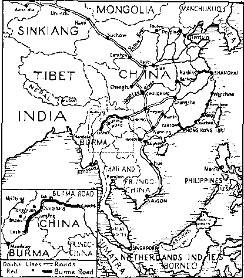
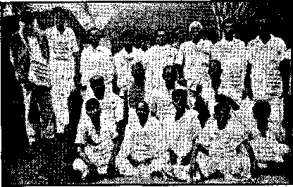
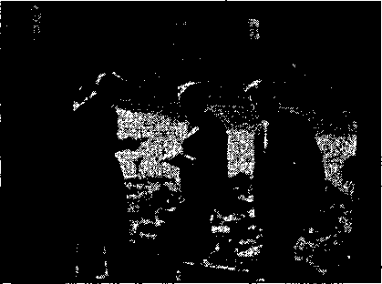
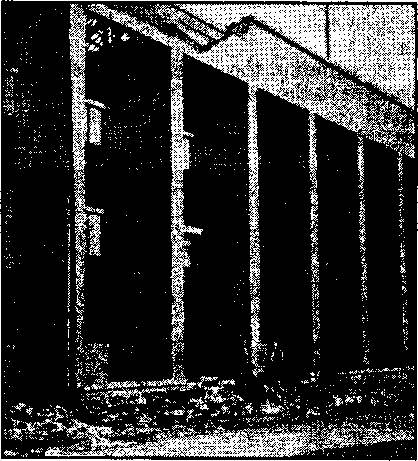

The Past Linked with the Present
The New Government
Jehovah’s witnesses on the Burma Road
Counsel by J. F. Rutherford
Under the Totalitarian Flag
“France’s Greatest Need' More Clergy”
Observations Regarding Jesuits
Spain Signs Aceord Giving
Tke Catholic Encyclopedia on “Jehovah” 23 Theocracy Exploits in Oregon
British Comment
Published every other Wednesday by WATCHTOWER BIBLE AND TRACT SOCIETY, INC.
117 Adams St, Brooklyn, N. Y„ U. S. A.
Editor Clayton J. Woodworth
Business Manager Nathan H. Knorr
Five Cents a Copy
$1 a year in the United States $1.25 to Canada and all other countries
NOTICE TO SUBSCRIBERS
Remittances; For your own safety, remit by postal or express money order. When coin or currency is lost in the ordinary malls, there is no redress. Remittances trom countries other than those named below may be made to the Brooklyn office, but only by International postal money order. Receipt of a new or renewal subscription will be acknowledged only when requested. Notice of Expiration is sent with the journal one month before subscription expires. Please renew promptly to avoid loss of copies. Send change of address direct to us rather than to the post office. Your request should reach us at least two weeks before the date of issue with which it is to take effect. Send your old as well as the new address. Copies will not be forwarded by the Post office to your new address unless extra postage is provided by you. Published also in Afrikaans, Bohemian, Danish, Dutch, Finnish, French, German. Greek. Hungarian, Japanese, Norwegian, Polish, Portuguese, Spanish, Swedish, Ukrainian; also special Australian edition In English.
OFFICES FOR OTHER COUNTRIES
England 34 Craven Terrace, London, W. 2
Canada 40 Irwin Avenue, Toronto 5, Ontario
Australia 7 Beresford Road. Strathfield. N.S.W.
South .Africa £33 Boston House, Cape Town ,
Entered as second-class matter at Brooklyn, N. Y,, under the Act of March 3, 1879.
The Pope Behind the Scenes
♦ Before Wells, an Englishman writing under the pen name of David Wilkie made it clear that Nazi-Fascism is another name for Jesuitism. This author was quoted in the November 20, 1935, issue of Consolation. He corroborates the facts which have been repeated to Americans often, that Hitler, Shirach (then leader of the Nazi Youth movement), Goebbels, and Goering are Roman Catholies. Goebbels was educated by the Jesuits, and Hitler’s education, as well as that of many others in the Nazi cabinet, was influenced by this religious gestapo. Wilkie says: “Hitler became chancellor of Germany, and later 'constitutional’ dictator, purely and wholly by Papist intrigue.”
Describing the post-“el ection” murders of 1933 after the Reichstag fire, Wilkie writes, under the title “The Pope Behind the Scenes”: “Broadcasting to Britishers on July 3 [1933], a Mr. Crossman, an eyewitness of the scenes during the Hitler murders, said that whenever he had spoken to the German people, from Munich to Berlin, all, without exception, told him the same thing, i.e., that ‘the pope was behind the whole of the trouble’.”
Wilkie then quotes Ludendorff, German writer, statesman, and soldier: “ ‘Fascism’ (meaning‘Nazism’ too), wrote Ludendorff in his book The Coming War, ‘is a fighting instrument of the pope.’ ‘Fascism is the offspring of the Jesuits.’ ‘The ways of the Church of Rome and Fascism are identical.’ ” “Papen and Hitler ‘saved’ Germany for the Jesuits, just as Mussolini ‘saved’ Italy for the ‘[Catholic] Church’.”
Since then Hitler has “saved” France for the pope, who openly approves the Petain regime set up by the Nazi butcher. The Nazi Defender of the Catholic faith also returned Greece to the fold by Jesuit methods. Now Hitler is “saving” Russia!
“And in His name shall the nations hope.”—Matthew 12:21, A.R.V.
VolumaXXltl Brooklyn, N. Wednesday, December 10, 1941 Number 580
Jesuit Destroyers
(In Two Parts—Part 2)
THE basic principles of the Roman
Catholic Church are at complete variance with the American principles of freedom and equality. Catholicism is therefore the very opposite of Americanism. The two are irreconcilable, as far apart as the poles. Any man who says otherwise declares his ignorance of all Papal encyclicals and official utterances of spokesmen for the Roman Church. Examples could be multiplied, but for the present purpose a few will suffice:
The absurd and erroneous doctrines, or ravings. in defense of liberty of conscience, are a most pestilential error, a pest of all others, to be dreaded in the state.--Encyclical Letters 0/ Pope Pius IX, iVugust 15, 1854.
Let us examine that liberty in individuals, which is so opposed to the virtue of religion, namely the liberty of worship, as it is so called. This is based upon the [American] principle that every man is free to profess, as he may choose, any religion or none. . . . This is no liberty, but its .degradation.—Great Encyclical Letters, Pope Leo XIII, pages 449 150.
We must now consider briefly liberty of speech and liberty of the press. It, is hardly necessary to say that there can be no such right; as this.—Same authority, page 122.
If Catholics ever gain a sufficient numerical majority in this country', religious freedom is at an end. So our enemies say. so we believe. —The Shepard of the Valley, official journal of the Bishop of St. Louis, November 23, 1851.
A man who has been ex-communicated by the Pope may be killed anywhere ... because the Pope has an indirect jurisdiction over the whole world.—Bussabaum-Laeroi, Theologica Moralis, 1757.
“ ‘I do not doubt, if they’ were strong enough, that the Catholic people, would hinder, even by death if necessary, the spread of heretical errors among the people, and I say rightly so.’ This statement was made by the Kev. Mr. Harney, a Paulist Father, in St. Peter’s Itoman Catholic Church, in New Brunswick, N. J., Friday evening.” New York Herald, May 7, 1901.—Quoted from the book lieligion, page 299.
“All loyal children of tlie [Catholic] church [are] to assist our worthy President with all [our] strength to see that the individuals comprising the United States Supreme Court shall obey the President’s injunctions and if necessary we will change, amend or blot out the present Constitution so that the president may enforce . . . our humanitarian program on all phases of human rights as laid down by our saintly popes and the holy mother the church.”-—Priest O’Brien, of Syracuse, New York, quoted from newspaper L’Aurora, Philadelphia, in Fascism or Freedom (copyright. 1939), pages 14,15.
“Moreover, we declare, affirm, define and pronounce it to be necessary to salvation to every human creature to be subject to the Roman [Pope].”—Cardinal Manning; quoted from the English Catholic journal Tabled, October 9, 1864.
In The Papacy and the Civil Power, written, in 1877-8, by Richard Wigginton Thompson, then secretary of the United States Navy, the following statement appears; “Nothing is plainer than that, if the principles of the Church of Rome prevail here, our constitution would necessarily fall. The two cannot exist together. They are in open and direct antagonism with the fundamental theory of our government and of popular government everywhere.”
Lawrence Fernsworth, liberal Catholic, wrote for the Protestant Digest, August-September 1940 issue, an article entitled “The Heresy of Freedom”, in which he strongly criticizes the leaders of his own faith: “Turning to the Jesuit press one finds that the American system is ‘pseudo-democracy, . . . Protestant, rationalist and definitely anti-Christian in its inspiration’; and further: ‘This business of teaching every child indiscriminately how to read and write results in nothing more than mass illiteracy. The indiscriminate “education” ap-pHed to all alike under a state system is the result of the heresy of the equality of man.’ [The Jesuit journal America, April 13,1940, and October 31,1941]”
Fernsworth (who was New York Times correspondent during the Franco rebellion, and found that the Times would not accept his version written from the Spanish front because it discredited the Catholic Church) summarizes the situation with Catholic regrets:
A compendium of even the most recent [Catholic] attacks upon liberalism in America would fill volumes. When one has sifted out their applications and meanings one finds that nothing, absolutely nothing, is left of those principles of liberty and freedom upon which Americans place a high value. One sadly reaches the conclusion that officially the [Catholic] Church does not believe that governments derive their just powers from the consent of the governed, nor that men, being bom free and equal, have the right to liberty and the pursuit of happiness. The individual has no right to decide wherein his happiness, consists. That is done for him by an ecclesiastical authoritarianism and his liberty consists in the freedom to stay within bounds. [In plain English this means he does what the priest tells him.] The principle of equality of man is a “heresy”. It becomes all too evident as the Jesuit speaker in Boston set forth, that, “Of course, liberalism and Catholicism cannot live under the same roof.”—Also from “The Heresy of Freedom”.
The past, the present, and what is left of “future” for the Roman Catholic Church, finds her the avowed enemy of all that Americans cherish. When Galileo discovered the revolution of the earth, he was forced by Pope Urban, on pain of death, to deny this fundamental truth. Two hundred years later a Spanish orator, himself a Catholic, declared, “There is not a single progressive principle that has not been cursed by the Catholic Church.”-—Castelar, 1869.
This is but a small portion of the record of Rome. At this day she has lifted up her head against the God of heaven and His Theocracy under Christ Jesus. Her venom is directed against Jesus’ brethren in a vain effort to stop the message which foretells destruction for this Devil-begotten institution. It is dreary business even to recall how her crimes have befouled the earth, and the presumptuous hypocrisy of labeling herself with the Lord’s name adds to the score which will be settled at Armageddon. “For, lo, I begin to bring evil on the city which is called by my name [‘Christendom’, including the Catholic Hierarchy], and should ye be utterly unpunished? Ye shall not be unpunished: for I will call for a sword upon all the inhabitants of the earth, saith the Lord of hosts.”— Jeremiah 25:29.
With these facts in mind it can well be understood why the Hierarchy has conspired for more than a hundred years to gain control of the United States. Reduction of the proud land of freedom is necessary to her plans for world domination. Some of the acts performed in this conspiracy to destroy “the heresy of freedom” are recounted in this and other articles in Consolation that honest people might be warned of the deep malice pointed at the bosom of America. Seeing this they should seek safety under Jehovah’s organization and put no reliance on the vain babblings of His enemies. Neither the pope nor his priests can save; only Jehovah can do that.— Psalm 3:8.
consolation
Resuming now the study of the enemies of the American Republic: George Washington, a staunch Mason, realized the attacks upon our liberties and institutions would be disguised as acts of “patriotism”. His warning stands out with prophetic significance: “Guard against the impostures of pretended patriotism.”
The Marquis de Lafayette revealed the quarter from which the attack might be expected: “American liberty can be destroyed only by the Popish clergy.”
Samuel F. B. Morse, inventor of the telegraph and the Morse code, wrote an entire book to give warning, entitled Foreign Conspiracy Against the Liberties of the United States, 1836, which emphasizes: “Popery is the antagonist of our free system.”
Five years later, according to Burke McCarty, the conspirators took the life of William Henry Harrison, ninth president of the United States. Harrison’s popularity, which swept him into the presidency, was the result of his military exploits against the Indians and the British. He had been the hero of the battle of Tippecanoe, in which Tecumseh, chief Indian trouble-maker of the time, was defeated (1811); and also the battle of the Thames, in which the British forces and their Indian allies were routed and a large portion captured, and Tecumseh slain, in the war of 1812. He participated in the growth of the young republic until his election to the presidency, in 1840. Just 31 days after his inauguration, he died of poisoning.
President Harrison was a stalwart American. His father, Benjamin Harrison, was one of the signers of the Declaration of Independence, and his grandson, also named Benjamin Harrison, became the twenty-third president of the United States. It is said that, besides his military exploits in behalf of .the hated republic, these words of Harrison’s incensed the Hierarchy more than any others: “We admit of no government by divine right.”
Zachary Taylor, redoubtable victor of the Mexican War, became the twelfth president of the United States, 1849. Although a slave-holder himself, he leaned toward abolition, strongly favored the Union, and was preparing a message recommending California’s admission to the Union as a free state, when he died suddenly in 1850. At this time the slavery issue was becoming paramount, and the fires of hatred were constantly aggravated. In view of the subsequent open attack on Lincoln, it appears that Taylor was poisoned by the Catholic conspirators because of his stalwart support of the Union. In his first message to Congress he stated:
“But attachment to the Union of States should be fostered in every American heart. For more than half a century, during which kingdoms and empires have fallen, this Union has stood unshaken. ... In my judgment its dissolution would be the greatest of calamities, and to avert that should be the aim of every American. Upon its preservation must depend our own happiness and that of generations to come. Whatever dangers may threaten it, I shall stand by it. . . . ”
In 1850, these were the circumstances of his death:
“On the Fourth of July, arsenic was administered to him during a celebration in Washington at which he was invited to deliver the address. He was in perfect health in the morning and was taken ill in the afternoon about five o’clock and died on the Monday following, having been sick the same number of days and with precisely the same symptoms as was his predecessor, President Harrison.” (Suppressed Truth About the Assassination of Abraham Lincoln, page 48)
It seems clear that the slavery issue was made use of by the Jesuit conspirators to divide the North from the South, set them at each other’s throats, and then triumph over the miseries of both. With this in mind the effort to poison James Buchanan, fifteenth president of the United States, has a definite meaning.
It was on Washington’s birthday, 1857, that Buchanan’s opposition to the Catholic party of Jefferson Davis became known. What happened is graphically described by the New York Post of March 18,1857: “On Washington’s birthday, Buchanan’s stand became known and the next day (23rd) he was poisoned. The plot was deep and planned with skill. . . . The President was known to be an inveterate tea drinker; in fact, Northern people rarely drink anything else in the evening. Southern men prefer coffee. Thus, to make sure of Buchanan and his Northern friends, arsenic was sprinkled in the bowls containing the tea and lump sugar and set on the table where he was to sit. The pulverized sugar in the bowls used for coffee on the other tables was kept free from the poison. Not a single Southern man was affected or harmed. Fifty or sixty people dined at the table that evening, and as nearly as can be learned, about thirty-eight died from the effects of the poison.
“President Buchanan was poisoned, and with great difficulty his life was saved. His physicians treated him un^er-standingly from instructions given by himself as to the cause of his illness, for he well understood what was the matter.”
This attempted assassination greatly frightened Buchanan. It may account for his apathy at the secession of seven states, and the taking of seven forts, four arsenals, one navy yard, and the U. S. Mint at New Orleans, all of which occurred during his administration. His last remark as president just before the arrival of Lincoln at the White House was: “As George Washington was the first president, so James Buehanan will be the last president of the United States.”
The successful plot of the Jesuits which ‘eliminated’ Lincoln was fully described in Part 1 of this article. At the trial of the eight conspirators in the summer of 1865 it became perfectly clear that many priests were implicated in the murder. There appeared to be some effort on the part of the Government to suppress the connection of the Jesuits with the case. This was done, according to official explanation, to avoid stirring religious animosity in a country already bitter and bleeding from the war between the States. So the Jesuit viper was allowed to remain in the bosom of the country, hatching new treacheries, until her wickedness has come to the full in this day. “When the wicked spring as the grass, and when all the workers of iniquity do flourish, it is that they shall be destroyed for ever.”—Psalm 92: 7.
Relentless Jesuits
It has been observed that the policies df the Jesuits do not change. They were organized in 1540 to combat the Protestant Reformation, and to that end they continue to fight. Today Catholic spokesmen generally blame the disaster in Europe on this Reformation and the subsequent division or scission of the Protestant denominations from the Church of Rome. They no,w look to Hitler to return all the world to the Catholic yoke. Part and parcel of this scheme for world domination is the subjugation of the United States, without which the Papacy will not be sated.
Few Americans can understand the deep and unchanging hatred of the Roman Catholic Hierarchy for anything that repels her authority. Most hatreds die with the bosom that contains them, but not so with this politico-religious institution, whose 1500 years have been spent in fighting righteousness. Every weapon is employed to reduce her opponents, and the fires of the Inquisition are kept burning to torment any foe that falls within her grasp.
Consequently, the death of Lincoln did not stop the relentless fury of the Jesuits. America was still free, still progressing, and some part of Rome’s treason had been publicly aired. During the fifty years after the Civil War her efforts were not entirely successful, but the assassinations of Garfield, in 1881, and McKinley, in 1901, show no abatement in murderous resolve. '
Theodore Roosevelt had much to do with the success of the American Navy against the Spanish, and was also the hero of San Juan Hill (Cuba). Elected vice-president, he took office as president after the death of McKinley. Throughout his eventful career Roosevelt terrorized grafters of high and low degree. On a visit to Rome he was snubbed by the pope, and “Teddy’s” response was not complimentary to the pontiff. In 1912 the assassin’s bullet struck down Roosevelt, but he recovered to live seven more years, to the end a doughty American.
But the end of men is not the end of Jesuitism. Only the Lord can and will destroy this malignant part of the Devil’s organization, which will be consumed root and branch by Jehovah’s Theocratic Government at Armageddon. Ex-Jesuit E. Boyd Barrett’s book, Rome Stoops to Conquer, shows that the Catholic Hierarchy has infiltrated every part of government and society in this nation, with the objective of controlling state, press and people. This is corroborated by George Seldes’ The Catholic Crisis, and daily declared by both friends and enemies of the Jesuits.
The Past Linked with the Present
There is a connection between the assaults upon the American democracy, carried on for more than a century by the Hierarchy, and the recent attacks on Jehovah’s witnesses, in that both were directed by the Jesuits. The Hierarchy exhausted their vocabulary of anathemas in reviling Lincoln, who was merely a political enemy. How much more terrible is their hatred against the ambassadors of The Theocracy, the new government which will bring their everlasting doom!
What are the conditions today that show the continuance of that vicious fight of the Devil’s visible representatives against God’s kingdom? What is the evidence that the prophecy is in the course of fulfillment which foretold that all nations would hate God’s servants who announce these truths? (Matthew 24:9) How do the plain facts show today that no earthly system can offer salvation, but only those who seek and find The Theocracy will live?
In the earth there is a babel of voices shouting different ways to safety. The pope has declared that the “new order” which is cut out with the Nazi sword is the European ideal. Hitler is now engaged in what is termed a “holy war” to make the world safe from “atheistic Communism”. In a recent broadcast the pontiff “attributed the sufferings of war to divine providence punishing the sins of mankind”, referring evidently to the scission from the Catholic Church. (AP, the Ithaca, N. Y., Evening Journal, June 30, 1941) Meanwhile it is manifest that the pope foreknew and approved Hitler’s plan for the Russian campaign; because a United Press dispatch of June 23, 1941, (New York Journal-American') says significantly: “Despite Soviet atheism, the Holy See had been training priests for duty in Russia in event of a religious change there, it was learned.”
Headlines in the New York Times of June 25 further emphasize the pope’s backing for Hitler: “Preach Holy War in Reich. German Catholic Bishops Order Sermons Against Russia.” The issue of June 23 says that the Germans made this promise to Russian Catholics: “We will allow you to organize religious parishes.” “Rumanian Troops Go into ‘Holy War’ ” to, “Recapture of Lands and Fight for Church”. Radio announcements that Hitler has received “token” armies from Sweden, Spain, Austria, Italy and Finland indicate international Catholic approval of his bloody religious mission. The Roman Catholic Episcopate calls the German invasion of Russia a “War ‘for Christianity’ ”.—UP June 25.
Thus we may observe the combine between the religious and the military of Satan’s organization, pictured by the “feet part of iron and part of clay”. For many years past Judge Rutherford has repeated that God’s Word plainly teaches that politics, commerce and religion would ally themselves against His kingdom. The book Prophecy, published in 1929, is a review of many prophetic statements, and contains the Scriptural proof of conditions obtaining today. It was only in the light of God’s revealed prophecy that the following truth could be expressed : “Politicians and commercial giants may try to reform the conditions; the clergy may talk of bringing about ideal conditions on earth; and all together they may make peace pacts and declare that they will bring about lasting peace, but the joint efforts of all will fail. There is no power on earth now that is able to remedy earth’s ills.” This is quoted from the book Prophecy, written by Judge Rutherford, under the direction of Jehovah, more than twelve years ago! ' The pope talks of peace, meanwhile backing the Nazis. The New York Times of June 30, under the headline “Pope Keeps Silent on Axis 'Crusade’ ”, gives a broad hint: “It is understood that this negative attitude will quickly be supplemented by private instructions to Bishops throughout the world.” Everyone who has studied the actions of the Papacy knows what these instructions will be. In the main they will repeat anxiety for Hitler’s success in “Godless Russia” and advise the strictest secrecy and control of the press especially in the United States. Thus is foisted upon the world the two-faced policy, fostered by the Jesuits, and designed by the Devil!
The Americans are about the only great nation under the sun who do not understand that Hitler is the instrument of the pope. The English dare not advertise the fact, for fear that all their Catholic subjects will follow the example of Quebec and Ireland. The Irish Catholics and the French-Canadian Catholics are manifestly pro-Axis. The famous British writer H. G. Wells and many others have exposed this link between Vatican and Nazi-Fascism. His article entitled “Why Don’t We Bomb Rome ?” asks the government why the sacred immunity of Vatican City while British churches have been wrecked by Italian and German planes.
As evidence that the English are not in the dark as to the duplicity of the Vatican, note the following editorial quoted from the April 4, 1941, issue of the London and Manchester Daily Mirror:
“Moral Matters”
“Now that Matsuoka has met the Pope we are informed by discrete Vatican 'circles’ that the Japanese envoy confined himself to the discussion of ‘moral and religious matters’.
“Such as the morality of bombing and torturing the Chinese? Such as the religious aspect of assault of rape and murder?
“We leave you to compose an imaginary conversation between the Yellow Peril and the Vicar of Christ on Earth.—W. M.” '
[Here read Notanda, page 2]
With these facts in mind, can any unprejudiced man, of whatever faith, doubt the pope’s interest in Hitler’s tank-tour to convert the Bolsheviks ? Does any such doubt that the Papacy is greedily anticipating the return of vast riches flowing from a Russia reconquered for the Catholic Church? The “new7 order” for Russia wuli be, “Pay the Pope.”
At this waiting both the Nazis and the Russians claim to have killed more than a million of the other. When cleared of the smoke-screen of Papal propaganda, the campaign appears as nothing more than murder and robbery to enrich the coffers of the Nazis and the pope.
What we witness today in Russia is a duplication of the Roman Catholic Inquisition with modern weapons. In the Dark Ages the Catholic “conversion of heretics” was accomplished by sword, rack and thumbscrew. Then the victims were customarily plundered and their wealth divided between the local Defend-er-of-the-faith and the pope. Now the pope rejoices that the tank and bomb are quicker and more effective!
Hitler makes the old Inquisitioners, Torquemada, “Bloody Mary/’ and Catherine de Medici appear like “small fry”. It is no wonder that Catholic Bishop Raskowski praises Hitler as the “Fuehrer and Supreme Commander” of “the German Catholic Troops”.—A Pastoral Letter to the German Catholic Troops.
Even Franco, knighted by the pope for “saving” Spain for the Roman Catholic Church, did not “convert” so many. That Defender-of-the-faith, more commonly known as “the Butcher”, only killed a few Catholics who did not want to starve to death even for the Catholic Church. But Hitler is carving new empires for which the pope has been training an effective collection agency of priests!
This explains ex-Ambassador Cudahy’s statement to the press after his interview with Hitler at Berchtesgaden: “What I am afraid of, terribly afraid of, is another ‘Thirty Years’ War’. The parallel is very striking.” (PM, June 10) This also accounts for the expressed determination of Hitler to dictate the final peace terms at historic Munster in Westphalia where the “Thirty Years’ War” was officially ended in 1648. But due to Catholic censorship in school and press, how many Americans know that the “Thirty Years’ War” was fought between Catholics and Protestants and that that war broke up the “old Holy Roman Empire” of Papal domination?
Journalists at home and abroad have pointed out tljis alliance between the Hierarchy and the Nazis. But the American press continues to bat for Rome. The editorial staffs of most newspapers are so completely dominated by Catholics that you can pick up nearly any edition and hear the Papacy talking. While Hitler takes full advantage of the pope’s backing abroad, in the United States the Hierarchy is doing a good job pulling the teeth of the opposition that such a course might arouse in this country.
One of the means of discounting this complicity between Nazis and official Catholicism is the often-repeated lie that the Catholics are persecuted in Germany. If any Catholics are persecuted it is individuals who are opposed to Nazi-Jesuit purposes. Likewise the Catholic population is not considered at all, but butchered without mercy to sate the pope’s greed. If there were any discord between Hitler and the Vatican, the pope has an immediate remedy, the excommunication of Hitler. But they are partners in the spoils, and will remain so until the Lord turns them against each other, when the totalitarians will rend the Papacy with fire and plunder her rich treasuries.—2 Chronicles 20:23; Revelation 17:16,17. See also explanation in the Watchtower magazine.
Now the Hierarchy is engaged in “saving” the United States for the Roman Catholic Church. That hypocritical religious organization finds it convenient to call all opponents ‘Communists’. They even call Jehovah’s witnesses “Reds”, even though these have repeatedly called attention to the fact that Communism is a scheme of the Devil. (Note Judge Rutherford’s lecture “Violence”, 1938.)
The Catholic Hierarchy has long made use of mobs, riots and pogroms. The history of the United States records many instances of mob action directed against Protestants and others who criticized the Papacy. In Iowa, Illinois, Massachusetts, and Texas, lecturing ex-priests were attacked, beaten, and several killed. On April 4, 1916, the Boston Post reports: “Big Riot Rages in Haverhill; Many Beaten; Militia Called.” In this case “Reverend” Thomas E. Leyden, Papal critic, had aroused the Hierarchy. So indignant were many Protestants over this mob action that resolutions were drawn up among them, ont? by the Protestant Clergy of Greater Boston which says:
“We want to know whether this sort of thing is to continue, whether it is possible that we are entering upon an era of Catholic tyranny in this state, whether criticism of one ehurch [namely, the Roman Catholic], and only one, is to be indulged in only at the risk of life and limb.”
The report of this and other mob action incited by Romanists is recorded in ‘‘Suppressed Truth About the Assassination of Abraham Lincoln”, written by Burke McCarty, Philadelphia, 192-1. In this book she recited the damnable ac-! count of the J esuit murder of Lincoln and three other presidents. These assassinations were some of the first fruits of the “Foreign. Conspiracy Against the Liberties of the United States” warned against in a book by that title written 88 years before by the inventor Samuel F. B. Morse. (See Consolation for a review of this and another book, Confessions of a French Catholic Priest, also sounding the warning to Americans.)
Yesterday it was other Americans who disagreed with Papal Rome.' Today it is Jehovah’s witnesses who have stirred the ire of the Vatican. The people of this nation can now be advised that Jehovah’s witnesses will not be the only victims when the Jesuit-Nazis have complete control of this country, where freedom was once its proud boast.
These are some of the facts that the public press hides from the people. They cover up the assaults on Jehovah’s witnesses. They laud hypocrisy and eulogize idolatry. In answer to this combine of tormentors we reply: “The Lord is our defense.”—Psalm 89:18.
“The battle is not yours, but God’s.” (2 Chronicles 20; 15) “Vengeance is mine; I will repay, saith the Lord.” (Romans 12:19) Let the Roman Catholic Hierarchy, the Catholic Legion, the Catholic Press, and every Catholic hanger-on, remember this when they go to bed at night and when they get up in the morning: The pages of the Bible record are strewn with the bodies of God’s enemies. The Hierarchy is next on Jehovah’s timetable 1
It is no wonder that Boake Carter said of world conditions: “It is my belief that the world is in the grip of forces now entirely beyond the control of man.” (Note Revelation 12:12.) The Bible shows that the chief cause of these conditions is religion. This is the Devil’s instrument ■which did “weaken the nations”. (Isaiah 14:12) Jehovah’s warning to the Israelites applies with greater force to professed Christians today; “Neither shalt thou serve their gods; for that will be a snare unto thee.” (Deuteronomy 7:16; Exodus 34:12,13; Judges 2:3) “The fear of man bringeth a snare; but whoso putteth his trust in the Lord shall be safe.”—Proverbs 29:25. (See also the book Religion, Chapter 2, “A Snare.”)
The New Earth
This text last quoted contrasts the results of yielding to religion with the salvation to be found by seeking The Theocracy. Surely the intelligent now realize that no hope can come from the Nazi-Jesuit combine which is devastating Europe. They that seek righteousness will not throw in their lot with the Papacy, which prates of peace while it promotes bloodshed. All this combine is against The Theocracy. They claim the right to rule the earth, which right has been bestowed on Christ by the Owner of the earth; therefore the Papal totalitarians are “the abomination of desolation, spoken of by Daniel the prophet, standing where it ought not, (let him that readeth understand,) then let them that be in Jud tea flee to the mountains.” This abomination will soon be violently ejected!
Let those who desire to live, therefore, turn their eyes to the picture of Jehovah’s beautiful “mountains”, the “new heavens”, which will administer blessings to the “new earth, wherein dwelleth righteousness”. (2 Peter 3:13)—Elton Groves.
TME magazine is distressed because, it says, there is an alarming shortage of nuns in the United States. Got the information from a Jesuit, and therefore, of course, there is no truth in it. As a matter of fact, there are in the United States 152,159 nuns. This is at least 150,000 too many. There is said to be over 500,000 nuns in the world. They are to be found everywhere. The present queen of Egypt, although she is a Moslem, was educated by Catholic nuns, and her father was educated at a Jesuit college.
The Japanese government and the Roman Catholic Hierarchy are congratulating each other that the Catholic church is now duly recognized as one of the Shinto religions of Japan.
In Manila, Philippine Islands, the publisher of the Philippine Magazine grew weary of the attitude of the Jesuits in behalf of dictators and in favor of abolition of all rights secured to the people by the Constitution. At length he wrote a letter to the “Most Reverend” Michael O’Doherty, D.D., archbishop of Manila, asking him to speak up and say something ; but all in vain. A part of the letter to the archbishop reads as follows:
As an editor and publisher, I should welcome the opportunity to be of service in contributing to a settling of the doubts that have arisen in the minds of so many people. And while the silence maintained by your Grace and other Catholic leaders here during the seven months that this controversy has lasted would seem to justify the suspicion of those who identify the Church as a whole with the Jesuit propagandists, I do not wish—disregarding my own private opinion—to emphasize this conclusion unless it should be substantially supported either by definite statements to that effect by the authorities of the Church themselves or by their continued silence in the face of such open propaganda. Even obvious facts, such as the support given by the Church to the dictatorships in Spain, Portugal, and other countries, and the fact that characters like Father Coughlin are permitted to retain their place in the clergy, may not bp sufficient proof that the Church as a whole supports in all parts of the world the dictatorship principle and the abolition of civil and human rights, the exacerbation of national and racial hatreds, and the war-lord ad venturings that are necessary elements in fascist ideology and practice. It can not be denied that many events and developments appear to support the accusations against the Church, while very little has come forth to refute them. In the interests of the country to which, as an editor and publisher, I have for many years devoted my best efforts, I suggest that a word be spoken by your Grace, the highest authority of the Church here, as to the official attitude of the Church, in this country in particular, toward dictatorship and fascist measures in general, especially with reference . to the fundamental democratic principle of the elective representation of individual citizens in government.
The Retrogression of Nuns
♦ Anyone who knows anything about nuns knows that they are nearly all like children; for, under the ironclad, narrow and restricted rule, the sisters retrograde from the day they enter, and as time goes on they become as the rule itself—bitter and heartless, from a sense of morbidness and from the unnatural conditions, circumstances and environment surrounding them. There are the sisters who are childish and silly; others who are the cunning hypocrite. The latter type become the schemers among the sisters for the system, and believe me, they , will leave nothing undone to gain favor with the heads of the order and the priests that they might gain some high office for themselves.—From The Demands of Rome, by Elizabeth Schoffen.
[Miss Schoffen was for many years a mother superior of a convent, but became disgusted with the racket and quit.—Ed.]
“Here Am I; Send Me!”
♦ One bright Sunday morning in March we had group witnessing in our area in a small town. After trudging around blocks for several hours, I finally played the phonograph for a lady and her cousin. The lady was not in position to subscribe for The Watchtower, but when J suggested that she take Religion and Satisfied she willingly agreed. Her cousin then asked if we had meetings anywhere. I informed him of the time and place of the company service meeting, Watchtower study, and Religion book study, in his area. ■
Tie expressed a desire to attend the next Friday night service meeting, so we took him with us. After the meeting he said he would not take a great deal for all he learned in so short a time, and asked if he could go out in the service with us the next day. We w’orked from door to door in rural territory in the morning and then on the street corner in the afternoon and evening.
It was very encouraging to see his enthusiasm as he witnessed to those he knew. He said he enjoyed himself very much the whole day, and is going to spend as much time in the service as possible. He has attended Watchtower, Religion and Model Study meetings, and says he gets more interested and increases his knowledge at each meeting. All the actions of the enemy are not worth mentioning as we visualize how Jehovah is gathering to" Him His “other sheep”.— Betty Dillon, Oregon.
What a Reward!
A young Jonadab 'writes: “The book Enemies was left with one of my brothers who had takeh it through kindness and courtesy. I read and reread this book and, by the Lord’s grace, within a week the curtains were withdrawn and I could see how hypocritical and rotten the Catholic church was which I had been attending regularly for so many years. I, of course, refused to attend church right then. This didn’t go very well with the rest of the family. Some of them made threats, and all of them turned quite cold toward me. I at once realized that it was an issue of either compromising or leaving home. With the Lord’s help I left home, and within a few months I joined the pioneer work. Now, in 1941, I look back and I can see how the Lord used me as an instrument to help the other members of my family to seethe difference between religion and Christianity. My leaving home made them investigate the matter, and now the whole family has quit going to the Catholic church. One of them is a very active publisher. Two more are attending the studies regularly, and the rest are quite interested in the literature. All of this makes me rejoice greatly in the Lord.”
The Burma Road. (See also items under “British Comment”, pages 29-31.)
Trivandrum convention, Travancore, India. Street witnessing with sound-car and magazine bags.
Jehovah’s witnesses on the Burma Road
♦ On the 10th of February, 1941, I started to travel 1,500 miles in mountainous country on a G.M.C. truck with my luggage and Kingdom literature.
After traveling 38 miles from Lashio, Burma, darkness set in; so the Chinese driver and myself slept in a broken-down hut amongst men of all nationalities.
Next morning I set off for the border, 90 miles away. On the way hundreds of trucks coining and going made driving very difficult. At the border, which separates Burma from China, customs officials and police were very busy.
It was not long before our truck was on its way through the newly built road to Free China. Climbing the high mountains, which were 8,000 feet or more above sea level, many trucks miscalculated these Alpine bends, and their destiny was over the side, many thousand feet below. Such trucks in two days’ time would be a skeleton, owing to highway truck robbers.
On the highway hundreds of coolies, men and women, are breaking stones by primitive methods. One outstanding point I noticed was that the coolie women bound their feet, being only about 4 inches in length.
Reaching Paoshang, some 400 kilometers [250 miles], one could see a beautiful town partly in ruins, o’wing to the Japanese bombing. The religious habits of the people in these parts were very noticeable. Firecrackers are much in demand, especially when erecting a building. Before the main beams are knocked together, the prominent men of the town set alight many fireworks in order to drive away the bad spirits. My food in these parts was mostly taken with the Chinese drivers. One has to learn to use the chopsticks well when six or more dishes of food are put on the table, as it is a race until it is finished. Putting the bowl of rice to the mouth and shoving it down with two sticks is no joke.
Since the road has been opened up the people are becoming more Westernized. Refugees from all occupied enemy towns are making their homes here in Yunnan-fu. The buildings, made of mud bricks smeared over with a little lime, make a good shelter. The Devil and his wicked crowd have been very busy trying to destroy these honest laborers. Farming is prominent. Many ingenious methods are used in irrigating the rice and other crops. Goods for market are carried on the backs of ponies some fifty miles or more.
In the latter part of winter bathing is not to be seen very much, as the water is icy cold. In the larger towns it cost four dollars a bath. It surprised me very much after having three baths a day in Burma.
After witnessing Paoshang and being held up for one day, owing to an air raid, I started for Kunming, where the road is very rough because of the thousands of trucks passing every few days. The mountain we climbed was about 7,000 feet high, and on looking down below there was certainly a beautiful sight; all the small mountains were covered with green vegetation; and the road winding down the precipitous mountain, with many hairpin bends, made driving very difficult. Four days it took me to reach Kunming, where there is a population of about 500,000 people, mostly Chinese,
Theocracy magazine publishers, Trivandrum convention, Tra vancore, India
Witnessing at Khnming shortly after a Japanese air raid had done considerable damage also a hundred foreigners. The town has been badly bombed, but that does not dishearten the Chinese. There is plenty of mud and lime and bricks; so a home can be built within four days, and on goes life just the same. The wheat fields are the- only shelter, but many miles away the people travel into the mountains.
My trip to Chungking from Kunming is about 1,100 kilometers [685 miles]. I met up with many difficult experiences; the Devil did not want me to go any farther, as the trucks were breaking down every hundred or so kilometers. After changing my luggage into seven trucks (from one to another) we managed to crawl into Kyeewang, about 600 kilometers [375 miles]. The weather was far from the best; it was drizzling rain, and icy cold, which made traveling uncomfortable. Also the seat was hard. The population of Kyeewang is about 10,000 Chinese, many being able to speak English. The greater number of these Chinese are refugees from other parts of China.
After waiting many days for a truck I managed to get started on my journey. The scenery here was colorsome; reminded one of the garden of Eden as we see illustrated: flowers that we would prize in our homes are growing along the roadside in thick clusters; fruits of all description—peaches, raspberries,

Witnessing to The Theocracy on the streets of Kunming, China, The bank's messenger shows interest, blackberries, oranges, and all kinds of stone fruits --are to be found along the journey.
Before reaching Chungking I was informed that 45 kilometers [28 miles] before my destination night road bandits have been known to shoot motorists without warning and loot the truck. It was about five o’clock in the evening and the driver was hurrying the truck along; we came to an incline; the brakes failed, the clutch jammed: so the driver finished stripping the gears, and landing right on the spot aforesaid. The police were sent for, and with fixed bayonets they guarded the truck all night, while we slept in a hut not far away. Xext morning we arrived in Chungking, sore, cold, and tired.
Many big towns can be reached from Chungking. The city has a population of about 1,000,000 people; many foreigners.
On my return trip to Burma 1 traveled the whole journey to Rangoon in 91 traveling hours, the distance being 2,000 miles; a record for the road. The whole journey was by truck. On reaching Rangoon I stayed three days, and then, with another witness, and much luggage, started on the trip again. We witnessed every town possible. In Kunming we placed much literature, and had many bombs drop around us wRile lying out in the fields for shelter while an air raid wa$ on. Of course, we could see the manifestation of Jehovah’s power when fifteen planes flew above our heads bizz, bang, the wind taking them into the town.
Well, folks, we are now7 in Chungking, having air raids every day; but that doesn’t dampen our zeal: we arc piling up the stones as in the river Jordan, meeting many who would like The Theocratic Government to come soon. We have much hill-climbing to do when witnessing. The heat [July, 1941] is terrible, but with a bellyful of tucker [Australian slang for food] and a bag full of books and, far above anything else, the Lord’s protection, we go still witnessing to Ilis name amongst people who have never heard of the Kingdom message before. There is much territory to do, and, by the Lord’s grace, we will do with our might what our hands find to do.
Theocratic love to all.
Your brethren in Kingdom service, E. J. Paton, H, G. Oates.
The good news of The Theocracy brought consolation to the proprietor of this damaged building in Kunming.
{To be continued)
gCfLJNSEL
TWO years ago, under the spell of so-called “Christinas”, the president of the United States, on December 23, 1939, first announced the appointment of an ambassador to the Vatican, the chief headquarters of religion on earth. That ambassador is sent to the pope, as the president stated, “as my personal representative in order that our parallel endeavors for peace and the alleviation of suffering may be assisted.” (Of course, the American government foots the bill, and that without consent of the people, and the one hundred and thirty million people of the nation are made to recognize the pope as the chief religious leader of the earth, and that he is now in league with the United States government.)
Continuing, the letter of the chief executive to the pope says: “When the time shall come for the re-establishment of world peace on a surer foundation, it is of the utmost importance to humanity and to religion that common ideals shall have united expression. ... 1 trust, therefore, that all of the churches of the world which believe in a common God will throw the great weight of their influence into this great cause.” (This does not mean Jehovah God, since He is not the common God of religion and politics, and they do not fear and obey Jehovah God, but oppose His Theocratic Government by Christ Jesus.)
As evidence that the president, as a political power and one of the world rulers, ignores the Creator and relies on man, note this part of his letter to the pope which says: “This world has created for itself a civilization capable of giving to mankind security and peace firmly set in the foundations of religious teachings. Yet, though it has conquered the earth, the sea, and even the air, civilization today passes through war and travail.” (Note the boasting and loud language, to wit: “The world has created for itself a civilization capable of giving to mankind security and peace firmly set in the foundations of religious teachings.'”)
The ambassador appointed to the Vatican is Myron C. Taylor, a former head of the United States Steel Corporation, one of the greatest corporations on earth, which devotes,most of its energy and money to building equipment for the destruction of human lives. Surely no sensible person would say that such a one represents the great “Prince of Peace”, Christ Jesus. (Isaiah 9: 6, 7) At the same time the president announced that he had invited the president of the Federal Council of Churches, which ostensibly is Protestant, and also the president of the Jewish Theological Seminary of America, which practices the Jews’ religion, to consult with him and to act as spokesmen for American Protestantism and American Jewry, in the common cause of the three “faiths”, thus proposing a closer relationship, if possible, between religion, politics and finance io govern the earth in opposition to the Almighty God and Christ His King.
THEOCRATIC ASSEMBLY (MEXICO)
One of the most b'essed conventions ever held in Mexico, and the first Theocratic general assembly, was held in Mexico City on September 12-16. A nice theater was engaged, with 1,000 capacity, which was just enough for the friends
attending it. Plenty of instructions for service were given, and some of the subjects used at St. Louis were here presented in Spanish. For the first time in Mexico we introduced the rooming arrangement for convention. Friends are rather poor here, and up to now were all accommodated free at head
Here is a concrete example and the most persuasive proof that religion, politics and commerce are closely linked together for the purpose of establishing peace, regimenting the people, and ruling the earth, and which is a claim by man of being able to do what alone Almighty God can do. This, in connection with the boast of the “civilization” which the “world has created for itself”, is assuming to do what is impossible for man to accomplish. “Blasphemy” is properly defined to be a claim by man to do that which God alone can do. The combination of religion, politics and commerce is in open opposition to Jehovah’s Theocratic Government by Christ Jesus. Therefore the boasting words of the combination are clearly blasphemous. Jesus, the King of The Theocracy, says: “He that is not with me is against me ; and he that gathereth not with me scattereth abroad.” (Matthew 12: 30) Clearly, then, the religious, political, commercial combine does not gather with Christ Jesus the King, but opposes Him; ■which is further proof that it is “the god of this world”, Satan, who is using religion, politics and commerce to deceive the people and to plunge them into destruction,
The president’s letter to the pope, and his appointment of an ambassador to the Vatican, and his calling leading Protestants and the leading Jew religionists to join with him in establishing world peace, was hailed by the press as the greatest news of modern times. Will that scheme, originating with “the god of this world”, to establish peace amongst the nations, succeed? For a brief time only; and this conclusion is fully supported by the Scriptures. It must be expected that soon the nations will arrive at some kind of peace agreement, and then the religious and political leaders will receive great honor and praise at the hands of the deluded masses of the people. Likening the beastly world rule to a wild animal, the Scriptures point out that then those who have yielded to religion and have come under the influence and power of the demons will say concerning the world rule by religion, politics and commerce, the symbolic “beast”: “Who is like unto the beast? who is able tovmake, war with him?” (Revelation 13:4) Then will the unholy combine, drawn together and acting as the visible representatives of the Devil, announce to the world, We have brought about peace,’ and will also say, “Peace and safety!” Then what shall follow? The Scriptures answer (1 Thessalonians 5:3): “When they shall say, Peace and safety; then sudden destruction cometh upon them, as travail upon a woman with child; and they shall not escape.”
quarters or at the friends’ homes. But this was now impossible; so we engaged rooms for those requesting this service in the corresponding blanks. Economic conditions hindered quite a number from coining, and, also, many friends from the States were unable to assist for this reason (many had
spent their savings going to St. Louis), and for the added reason of passport requirements. But, all in all, it was a blessed and busy time to the honor of Jehovah and for the joy of those that were able to attend it and of all others that love Him in Mexico.
The pope received the message of the president then, in 1939, with real satisfaction and notified him that his ambassador would be well and gladly received. Then on the 28th day of December, 1939, the pope made a personal call upon the king of Italy; concerning which the Press report said : ‘Pope Pius today, in a brief speech after the ceremonial meeting with the king and queen, said “the visit resealed the happy accord between church and state”/ These facts constitute further proof of the confederacy between religion and politics, supported by selfish commerce, to establish a so-called “peace of the world” and to rule the earth in complete defiance of the Word of Almighty God. Shall the efforts of such men succeed? Jehovah, speaking to that unholy combine, says: “Associate yourselves, () ye people, and ye shall be broken in pieces.”—Isaiah 8:9-12.
Let it be conceded that the purpose of the aforementioned persons to establish peace in the earth is sincere; yet that does not alter the matter in the least, because their announced purpose is exactly contrary to the announced purpose of the great Theocrat, Jehovah God, and in defiance of Uis Word. Lor years attention has been called to the fact that the alliance of religion, politics and commerce is against Jehovah’s kingdom. The evidence should convince all who believe in Jehovah and Christ Jesus that by means of religion the Devil is leading all the nations of the earth into the ditch. The declaration sent out now by religionists, politicians and commercial giants is directly against the Almighty God and His King and is in defiance of Jehovah’s words, to wit: “Behold, my servant [Christ Jesus] whom I have chosen; my beloved in whom my soul is well pleased; 1 will put my spirit upon him, and he shall declare judgment to the Gentiles [the nations]. . . . And in His name shall the Gentiles [nations] hope.” (Matthew 1.2:18,21, A.R.V.; see Isaiah 42; 1-7) God’s announced purpose must be and shall be carried out, because Tie has so stated.—Isaiah 46: 11.
“Hell Ain’t So Hot”
♦ I was hurrying home when 1 noticed her standing by the roadside signaling for a ride. She was neatly clad and something about her lace attracted me, something beside the color, for she was a colored girl around twenty years of age.
The rear seat of my car was empty, and feeling that, after all, we are all of one blood, I stopped to pick her up. The foreign element is very small here and her Southern brogue was entertaining; therefore I let her do most of the talking. After a while I let her know I was one of Jehovah’s witnesses, and the poor girl * was overjoyed. She said, “Oh, yes, Judge Ruderfohd and Jehovah witness. I used to listen to de jedge ovah de radio. A Jehovah witness lived next do ah to where 1 worked; she took me in her car to Waichtmvah studies; 1 suah learned sumping thcah. I learned hell ain’t so hot and when yo is daid yo is jus daid and that’s all til yo is resorected.”—Cont’b’d.
A Terrible Winter ,
♦ Those who passed through the winter of 1940-1941 in Spain report the experience as horrible beyond words. The poverty beggared description. Almost everybody was starving. The best hotels in Madrid had meat only about once in three weeks, and that was generally horsemeat or dog. An American motoring through the country gave some stale bread to garage mechanics who repaired his car, and they were so grateful they burst into tears. It is quite evident that the people are unable to rebuild their country to what it was, after the treachery of a Britisher put it in the hands of Franco. Typhus was prevalent. Travelers report seeing men die under their eyes and their bodies immediately turn black. Prisoners were being murdered daily. Torture was common. A current mode of torture was the application of electrodes to the breasts of women. It is claimed that during the entire winter there were twelve German divisions in Spain,, and that Hitler has been directing Spain’s national and international policies since October, 1938.
3,000,000 Children Near Starvation
♦ James Wood Johnson, health expert, visiting Spain in the spring of 1941; reports that half the children in Spain have been so weakened mentally and physically that they can never be brought back to health even with normal feeding. Eight out of ten women in Spain no longer are able to nurse their babies. Of those who do, only 1 out of 4 can provide the necessary milk; so only 1 out of 20 babies is normally fed. Large numbers of children are born at 2| to 3 pounds. A Spanish woman who gives birth to a child loses 25 to 30 pounds in weight, and cannot regain it. The same conditions are now noticeable in France and in every other country where the “new order” is getting under way.
This Farmer Talked Too Much
♦ Near the city of Vitch, Spain, a farmer thumbed a ride on a truck which was carrying a coffin. It was raining, and the farmer got inside the coffin to get out of the wet. Down the road a piece two other hitchhikers got aboard. After a bit the farmer raised the lid and said, “It’s stopped raining.” So it had, but he spoke out of turn. The two riders didn’t realize how much the change of weather meant to the farmer, so they both took a flying leap. One was killed and the other was seriously injured. So there was work for the coffin anyway; but the farmer talked too much.
Life would be rather dull if nobody ever said anything, but it must be admitted that silence is often wisest.
Helping Franco in His Deviltry
♦ The work of arresting Spanish Loyalist leaders in unoccupied France, and turning them over to General Franco to be tortured or executed, goes on unceasingly, Senor Caballero, 73 years of age, one-time premier; Senor Anso, a minister of justice; and Porta Valladares, one-time prime minister of the Cdnser-vatives, are among recent victims.
Starving Protestants
♦ Rules in Spain are that Protestant churches may have no outside lettering and may not have an ecclesiastical appearance. In country districts persons known to be Protestants cannot obtain work and no relief is given to a Protestant until he has attended a Roman Catholic mass.
100,000 Spanish Workers to Germany
♦ To alleviate the labor shortage in Germany 100,000' Spanish, workers were shipped from their homes to that faraway country. In effect this is an initial step in the inauguration of slavery, twentieth-century style.
“France’s Greatest Need: More Clergy” ♦ The above headline is from.Tfce [Catholic] Universe, London, and is the opinion of the archbishop of Aix, but it isn’t true. There are some who think that if France had had no clergy at all in the last ten years she would not, today, be the spineless vassal of Hitler.
All liberty-lovers are disgusted with the Vichy government, and all diplomatic observers in Vichy are reported in agreement that Henri Moysset, who studied to be a priest, has had more to do with making the Vichy regime what it is than any other one man. It is claimed that he writes all of Admiral Darlan’s addresses and makes all of his decisions. Darlan is, perhaps, held in about the least esteem of any man in France today.
A dispatch from Vichy tells of bonfires and dances all over southern France “celebrating the feast of St. John the Baptist” on June 24, and admitting that the custom originated with the Druids. In other words, it is a form of demonism, or sun-worship, adopted by the Roman Catholic Church as one of its countless pagan features. Jf France had more priests, she would have more pagan ceremonies of this kind.
Another heathen celebration took place in Paris in May, where, it is claimed, 25,000 persons venerated the crown of thorns. Why anybody should venerate anything that caused such intense pain and anguish to the Savior would be hard to understand, except that they find pleasure in anything that brings reproach upon God’s holy name. The more priests France has, the more the people would venerate this crown of thorns.
‘Vatican’s Feelings Mixed’
♦ In the account of when the Devil took Jesus up into a high mountain and showed Him all the paraphernalia of “this present evil world” (Galatians 1:4), all their battleships and submarines, all their cannon and torpedoes, all their bombers and tanks, all their incendiary bombs and flame throwers, all their panzer units and poison gas, etc., it does not say of Jesus that He had mixed feelings. But when the New York World-Telegram., June 23,1941, needed a headline to cover their United Press dispatch from Vatican City regarding Germany’s invasion of Russia they selected the caption: “Vatican Feelings Mixed on New War.”
Herbert L. Matthew’s, New York Times representative at Rome, and one of the most careful of newspapermen to state everything just the way the Hierarchy wmuld have it stated, said concerning the German invasion of Russia that the pope’s critics “could not point to a single move or word by any authorized Vatican source to show that the Holy See approves of Germany’s campaign”. And a week later, when he was reporting the pope’s statement regarding responsibility for war, he referred to the pope’s action in “making a long and important broadcast, without giving a single word of encouragement to the self-styled crusaders”.
The pope is one of the most accomplished diplomats in the world. Does anybody suppose that he would be so foolish as to openly express his satisfaction at Hitler’s invasion of Russia, when he knew it would alienate the good-will of millions of Americans?
The pope is mixed on how to pray, also. It is very improper for anybody to address “the head of the Christian church” and to tell him. point-blank in his prayer that as respects his church he himself and not Christ in person is the “Vicar who governs her”. Yet the pope did that on June 2 in his widely advertised world prayer for world peace. And why pray for peace when according to his own statement “it is the Almighty God who lets loose the hurricane of war on humanity” ?
Education in Quebec
♦ Quebec and Ontario are very similar in size and per capita wealth, but in 1.936 Ontario spent $38,000,000 on education, while Quebec spent less than $20,000,000. Teachers’ salaries in Ontario ran from $740 to $2,249, while in Quebec the average salary paid was $460 a year. Quebec’s percentage of illiteracy is twice as large as that of Ontario. There are 460 public libraries in Ontario, and only 26 in Quebec. The infant mortality in Ontario is only half what it is in Quebec. The death rate from tuberculosis is less than half. This is what the Homan Catholic Hierarchy have done for Quebec, said to be the last country in the world where the church exercises complete control over the schools.
It seems peculiarly appropriate that just after William 0. Bullitt, former United States ambassador to France and Russia, had been so terribly lambasted in the diary of William E. Dodd, he should be made a Doctor of Law's at the Catholic University of Montreal. Some Americans who have some respect for common decency would be surprised to know that, at Montreal, on July 23, a marriage contracted 24 years previously between two Catholics was annulled because the marriage had been performed by an Anglican minister.
Protestants will be interested to know that 34 Protestant ministers representing eight denominations were guests for three days at the House of the Trappist Fathers—ministerial retreat for 1941, ten miles out of the City of Winnipeg. If any of those Protestant ministers are married they were considered by the Trappist Fathers as living in adultery unless they were married by Catholic priests.
Observations Regarding Jesuits
♦ The Decretals of Gregory IX say that Roman Canon Law declares that “An Oath contrary to the utility of the ‘Church’ is not to be observed”—-which led John Wesley to say: “It is plain that the members of the Roman ‘Church’ can give no reasonable security to any Government of their allegiance or peaceful behaviour. They ought not, therefore, to be tolerated by any Government, Protestant, Mohammedan or Pagan.”
Charles Kingsley said of Jesuits: . . . “Doing the devil’s work if ever men did it, trying to sow discord between man and man, class and class.”
Carlyle said about Jesuits : “There had been liars in the world; . . . but there was in this of Jesuit Ignatius an apotheosis of falsity, a kind of subtle quintessence and deadly virus of lying the like of which had never been seen before. Measure it if you can; prussic acid and chloroform are poor to it! Men had served the devil and men had very imperfectly served God; but to think that God could be served more perfectly by taking the devil into partnership—this was a novelty of ‘St.’ Ignatius.”
Pascal said of Jesuitism: “O that these horrible maxims had never escaped out of the bottomless pit, and that the devil, who is the original author of them, had never found men sufficiently devoted to his service to promulgate them.”
Jesuitism is now the essence of popery and the Jesuits rule the Papist organization. Pascal was a (frenchman; another French writer, Voltaire, put his opinion of the papist ‘church’ into a very short sentence: “Ecrasez 1’infaine” (Wipe out the vile thing).-— Ulster Protestant, July, 1941.
Imagination for Understanding
♦ How admirably contrived is every part of the structure of this [Roman religious] system to take captive the imagination; all the arts of the imagination are pressed into its service; architecture, painting, sculpture, music, have
lent all their charm to enchant the senses and impose on the understanding by substituting for the solemn truths of God’s Word, which are addressed to the understanding, the fictions of poetry and the delusions of feeling. The theater is a daughter of this prolific mother of abominations, and a child worthy of its dam. The lessons of morality are pretended to be taught by both, and much in the same way, by scenic effect and pantomime, and the fruits are much the same. . . . That pictures may and do have the effect upon some rightly to raise the affections, I have no doubt, and, abstractly considered, the practice would not be merely harmless, but useful; but, knowing that man is led astray by his imagination ■ more than by any of his other faculties, I consider it so dangerous to his best interests that I had rather sacrifice the interests of the arts, if there is any collision, than run the risk of endangering those compared with which all others are not for a moment to be considered [the interests of the Kingdom].—S. F. B. Morse, Letters and Journals.
Jihad—Why Not?
♦ Hitler is said to be summoning the Arabs to proclaim a jihad, or “holy war”, against the British in the Near East. Commenting on this the New York Times says: “This war whose course runs beyond all powers of prediction has offered more than one strange paradox: none stranger than this spectacle of the greatest infidel of modern times summoning Islam to a holy war, with the blood of fourteen nations on his hands.” Hitler is not an infidel in the sense in which the Times understands infidelity. On the contrary, he is a pronounced religionist, and was put into his job by another religionist, Eugene Pacelli, now Pope Pius XII. Both are ardent Roman Catholics, planning and scheming together to gain control of the whole world, and using any tools and any methods to gain their ends
Mixed Up on the Catechism
♦ It is well known that in previous editions of the Baltimore catechism the second commandment of Almighty God was omitted entirely, and the tenth commandment split into two parts, so that there would be ten all together. If you will turn to Exodus 20:3-17, and compare the language with that of the Baltimore catechism, you will see that the following words are omitted, and it is the irreverence of the Roman Catholic Hierarchy for these words and the reverence of them by the children of the King that has caused such suffering to Jehovah’s faithful little witnesses within the last few years. The words of the commandment are:
“Thou shalt not make unto thee any graven, image, or any likeness of any thing that is in heaven above, or that is in the earth beneath,, or that is in the water under the earth: Thou shalt not bow down thyself to them, nor serve them: for I the Lord thy God am a jealous God, visiting the iniquity of the fathers upon the children unto the third and fourth generation of them that hate me; and shewing mercy unto thousands of them that love me, and keep my commandments.”
The first revision of the catechism in fifty years was recently adopted, and there was a good opportunity to do the honest and reverent thing and reinsert the missing commandment, but it was ngt done. The changes made were insignificant, except one that is worth noting. The new catechism does omit the words, “I dread the loss of heaven and the pains of. hell.” That is just as well. There will never be more than 144,000 taken to heaven, all together, and not one Catholic or other religionist among the number. And as far as the “pains of hell” are concerned, the Scriptures plainly say that “the dead know not any thing” (Ecclesiastes 9: 5) and “the wicked shall not be”. (Psalm 37 :10) How can one be tortured who knows nothing and who does not exist in any place at all?
Spain Signs Accord Giving
Catholicism Greater Authority ♦ With the assistance of his Catholic comrades Mussolini and Hitler, Franco, the betrayer of Spain, has agreed that hereafter Spain’s only religion is Catholicism, that all teachings in universities and schools must be Catholic, and that bishops have a right to strike out teachings they do not like. Perhaps the only good thing that can be said for Franco is that he does seem to be showing some gratitude both to Hitler and to Mussolini, and has been trying to stir up the whole of South America to justify him in sending 90,000 Spanish youths to fight in Russia alongside German troops. He is getting some results in Quito, Ecuador. The Catholic newspaper El Debate has openly stated that "in the struggle between Germany and Russia we are with Germany and we desire her triumph”.
Harold Callender, back from a fourmonth trip to South America, reported that he found many Catholics leaning toward the totalitarian side. Said Mr. Callender: "Repeatedly one heard from priests and laymen throughout South America the view that the Salazar dictatorship in Portugal was an almost ideal State; and this seemed to be accepted as a fairly general Catholic view. It does not, of course, coincide with the traditional American view of the desirable State.”
Nobody should imagine that Spanish priests look with disfavor upon the Spanish Inquisition., On the contrary, they are proud of it, as is illustrated in the following, which appeared in the An-a-letta Ecclesiastic® in January, 1895, from the pen of a Capuchin ‘friar, who wrote thus:
To the suspicious watchfulness of the Holy Inquisition is certainly to be ascribed the religious peace and certainly that steadfastness in the faith whereby the Spanish race is distinguished. 0 blessed flames of the pyres, whereby, through the removal of a few poor creatures, and those the most crafty, hundreds and hundreds of squadrons of souls were snatched ■ from the jaws of error and perhaps from the jaws of damnation, and whereby civil society itself, admirably fortified century after een-tury against the ruin and slaughter of domestic dissensions and wars, lasted on happy and safe. 0 illustrious and venerable memory of Thomas Torquemada [under whose fifteen years’ Inquisitionship 2,000 persons were burnt, 40,000 penanced, frequently after torture] , “who, conspicuous by his most prudent zeal and invincible virtue, splendidly provided that the baptized should be held aloof by wholesome fear and thus won for the fatherland a prosperity greater than the acquisition of the Indian Kingdom.”
The Catholic Encyclopedia
on the Name “Jehovah”
♦ Jehovah, the proper name of God in the Old Testament; hence the Jews called it the name by excellence, the great name, the only name, the glorious and terrible name, the hidden and mysterious name, the name of the substance, the proper name, and most frequently shem hamme-phorash, i.e., the explicit or the separated name, though the precise meaning of this last expression is a matter of discussion. Jehovah occurs more frequently than any other Divine name ... in round numbers it is found in the Old Testament 6000 times, either alone or in conjunction with another Divine name. The Septu-agint and the Vulgate render the name generally by “Lord” (Kyrios, Dominus), a translation of Adonai—usually substituted for Jehovah in reading. . . .
It has been maintained by some recent scholars that the word Jehovah dates only from the year 1520. Drusius represents Peter Galatinus as the inventor of the word Jehovah, and Fagius as its propagator in the world of scholars and commentators. But the writers of the sixteenth century, Catholic and Protestant, are perfectly familiar with the word. Galatinus himself represents the form as known and received in his time. Besides, Drusius discovered it in Por-chetus, a theologian of the fourteenth century. Finally, the word is found even in the “Pugio iidei” of Raymund Martin, a work written about 1270. Probably the introduction of the name Jehovah antedates even R. Martin.
No wonder then that this form has been regarded as the true pronunciation of the Divine name by such scholars as Michaelis, Stier, and others. . . . The abbreviated form Jeho supposes the full form Jehovah.
WITNESS was playing phonograph in the yard to a lady, wdien the preacher went by and heard it. He hollered to the lady and said, “Do you want to go straight to hell?” The lady answered, “No, just run along by vourself.” He did.
Witness drove up to place; noted'a man in the barn lot killing a chicken for Sunday dinner. Witness decided to go to the house. A lady and her grown son both came to the door. The lady said they were too busy to listen to the recording but that she would take the book, Salvation, as her neighbor had been telling her about it. Lady turned to the son and asked if she could borrow the money for the book, and the son w’ent into the room to get the money. While waiting the witness offered a copy of Consolation to the lady, saying that the son no doubt would read and enjoy it. At that moment the man who had been in the barn lot came raving through the house from the back door, took the Consolation magazine out of the witness’ hand and threw it in his face and called him terrible names, told him to get out, and closed the door, crushing the baby's fingers in the door. Witness went to the car. The lady came out, saying, “I want that book and I’m going to pay for it.” She came out to the car with the money and said she was so sorry for what had happened; whereupon witness told her that book • would make her glad. So here were a “sheep” and a “goat” in the same house. The sight of the phonograph had drawn fire.-—Contributed.
SOMETHING- new in do or bell-ringing technique came under our observation recently. Anticipating a visit from the census enumerator—which, by the way, hadn’t materialized at this writing—we found two well-dressed young women on the front porch. They had no desire to enter. ■
"We have something we are sure you will want to hear,” said one, while the other cranked up a portable phonograph, placed a record on it and began to grind out a “canned” sermon. It was Sunday and during church hours. Probably we should have been in church instead of supervising the work of a neighbor and several small boys who were building a fence. It would have been cheaper.
At any rate, the phonograph continued to run for several minutes with occasional comments from the young ladies. After “Finally, my brethren” had been spoken on the disk, they launched into their sales talk—magazines, books and pamphlets. We might have known what was coming. Sales resistance was at a low ebb. But, in any event, who would fail to succumb to such technique? We always have been a sucker for book agents anyway. Few magazine salesmen fail to batter down the ramparts of our thinly veiled apathy and penuriousness, even without such streamlined accessories as portable phonographs and transscriptions of evangelical appeals.— Spokane (Wash.) Spokesman-Review.
Home Owning in Brazil
♦ Brazil has made a start to encourage home-owning, especially by the poor and by those of large families. Insurance institutions are authorized to loan their funds for this purpose. No man may borrow sums the monthly payments on which ampunt to more than 45 percent of his wages. He must pay in 20 years, but if he has more than four children the payments may be extended to 25 years. All loans are secured by mortage, insurance upon the life of the borrower, and fire insurance. The monthly payments are at such a rate as to also pay the taxes. Foreclosure is deferred for six months in case of loss of employment or serious illness.
Venezuela the Worst Ruled
♦ The claim is made that Venezuela is the worst-ruled country in the world. Formerly in the hands of Dictator Gomez, who regularly stole about $50,000,000 from the government every year, it is now in the hands of three or four thousand families who take it all. The common people get nothing, and around 3,000,000 of them are literally starving. The forms of both children and adults are misshapen from lack of food. Gomez was greatly honored by the Vatican.
Scorpions in Rio de Janeiro
♦ The winters of the north get to be dreaded as one grows older, but the tropics have their drawbacks also. A plague of scorpions attacked the suburbs of Rio de Janeiro, and the creatures were of such size and so poisonous in their bites that two children who were bitten died. The pest was subdued by public health officials armed with insecticide guns.
Up One Side and Down the Other
♦ Uncle Sam loans Argentina $100,000,000, which used to be considered a big sum of money, not so long ago, and Argentina uses it as a basis to trust Spain to 120,000 bales of cotton; so Uncle, with his big roll, gets it up one side and down the other, and will be loved now, and be hated when he wants something back.
Notanda from Colombia
♦ The Associated Press carried a dispatch from Colombia that in Bogota most of the business of the city is done in the cafes over the coffee cups; that in Medellin the strawberries brought to market are each pierced individually with needle and thread and brought to market in strings, the price depending upon the length of the string; and that throughout the country the children are now being sold shoes at cost, tb guard them from tropical diseases, and improve their appearance. The shoes are paid for a few pennies at a time. Each school child carries a little book in which the tiny payments are recorded as made.
Could Take 900,000,000
♦ It is estimated that Brazil alone could take 900,000,000 people, and about that number would be required to keep the vegetation down in the Amazon region. Japan estimates that “Oceania” could take care of 600,000,000 to 800,000,000 people, but did not say what she meant. Probably the term was intended to cover all the islands of the Pacific and Indian oceans, including Australia and New Zealand.
“Britain Always Delivers”
♦ In the summer of 1939 the Germans took large orders for goods in South America, promising deliveries in a few months, stating that the war would soon be over. The ones that are delivering the goods are the British, and they are now taking care to stencil in Spanish on the packing cases the words, “Great Britain always delivers.”
The War in Iraq
♦ Maybe by the time this is printed there will be a new war in Iraq, but the British are on top at this writing. In their quest of “lebensraum” the Germans; after grabbing fourteen countries, happened to think of Iraq and its oil wells and so inaugurated a jihad to get the wells away from the British. In the land of the Arabian nights they got Mr. Rashid Ali Beg Gailani on their side and he made a stab at overthrowing the government. The Russians wanted to keep Hitler away from their own oil wells; so they hurried up and pronounced Mr. Gailani the rightful ruler, and he turned his guns on the British. Also, and that was a dirty trick, he used troops that had been trained by the British. Well, the British landed their own troops at Basra, ancient home of Sinbad the Sailor, and after a little they placed Mr. Gailani in storage, so that they could have the oil as of yore. Some claim that Iraq is merely the Arabian form of the wrnrd Erech, mentioned in Genesis 10:10 as one of the places where Nimrod ruled. Nimrod, it will be remembered, combined Pacelli and Hitler in one person. He was the top-notcher both in the religious business and in the killing business, in his day. It is stated that he considered himself “before the Lord”, i.e., as more important than Jehovah God, but it is certain he thought of no such awful blasphemy as ordering the Creator to leave His throne and come down and be eaten up by a priest. And as a warrior he was certainly far behind Adolf Cardinal Hitler, who now seems to have the world by the tail and to be swinging it in wider and ever wider circles about his head.
Von Papen and Iraq
♦ Wherever goes von Papen, Papal chamberlain and millionaire diplomat for Hitler, there goes clever intrigue and bedevilment of the highest order. Many wondered what could be his mission in Turkey, but when the insurrection occurred in Iraq then they remembered that before the revolution took place several of the Iraqui ministers consulted with him at Ankara. '
Taking Care of the Priest
♦ In the island of Bali, Dutch East Indies, the people are not sure what becomes of their priests, when the priests die; so they save up the bodies of their relatives and friends, and when the priests check out they make a big bonfire, and their idea is that the spirits of their dead accompany the priest’s soul to heaven. Actually, the priest and all the rest of them are in the Bible hell. But the Balinese are like other people: they don’t want the truth; they want religion.
Nazi Envoy Arrived Dead
♦ Dramatic events follow one another with bewildering succession. The Nazi struggle for control of Iraq was short and unsuccessful, but captured the headlines. The Russians recognized the Nazi government of Rashid Ali Beg Gailani, now a fugitive, and now are sorry they did. The Nazis sent Axel von Blomberg as their envoy while Rashid was still on the job. He landed, but remained seated in the plane, and when Rashid somewhat indignantly clambered into the plane he found Axel dead, shot through the head. No one knows who did it.
Wild Ox Found in Indo-China
♦ Specimens of the kouprey, or wild oy, have been found in Indo-China, and it is now known that this interesting creature, supposed to have been extinct thousands of years ago, may have as many as 1,000 specimens living in the jungles of its native land. The kouprey stands five and one-half feet high at the shoulder and has huge, crescent-shaped horns.
Finishing Off the Jews in Austria ♦ The Buffalo, N.Y.,, Jewish Review contains the details of how the 45,000 Jews now left in Austria are being scientifically finished off, along with the 15,000 others who are really non-Jews but are counted as Jews according to German laws. Two thirds of all the real Jews are kept alive by the one third who still have some property, Some means or some income, but no Jew has any legal rights, and whatever he may have today may be taken from him tomorrow by sheer confiscation,
Jews may live only in certain districts, and as many as ten families may have to use one kitchen and sleep in four rooms. Jews (except doctors and lawyers) may not own radios or telephones, must be off the streets by dark, and may not attend theaters, concerts, movies or other gatherings of the public. Every male must use the first name Israel, and every female the first name Sara, and every Jew over five years of age must carry an identification card to show to any official that may wish to see it. There are only a few small parks which a Jew may enter.
A Jew may not purchase pastry, confectionery, fish, poultry, canned food, fruit, and certain of the most desirable vegetables. He is expected to exist, if at all, on bread, meat, fat, potatoes and cabbage in minimum quantities, and he may not eat in any restaurant or cafe at all. .
Distress in the Balkans
♦ The effort to please the Devil, and to live up to his “new order” of murder and slavery, is making the Balkans an even worse spot than usual. Rumanians and Hungarians are fighting side by side with the Germans in the invasion of Russia, but the tension between these two is so great that Rumania will not permit the entry of mail written in Hungarian, so the several hundred thousand Magyars that live in Rumania must write either in Rumanian or in German or Italian. But telegrams in French are also permitted.
Jews continue to be terribly mistreated in Rumania, Those pressed into military service must -wear yellow stripes on their sleeves, and those who were once officers must wear the Jewish star in a color suitable to the rank previously held. Moreover, the Rumanian government has confiscated part of the Jews’ clothing.
Reprisals in Serbia
♦ Serbia, for the moment defeated, hates the Germans and Croats worse than ever, and guerrilla warfare continues, even despite the widely published and meaningful threats of the German authorities that they will take the lives of 100 ‘ Serbians for every German or Croatian that is slain. They mean business, and by midsummer of 1941, it was calculated by observers, not less than 80,000 men and women had been executed on this basis. About a quarter of these were killed by strangulation; the method being to compel the victims to mount a small pile of bricks, then a short rope is thrown over the limb of a tree, the bricks are kicked out, and slow strangulation follows. Executions often take place on the same day as the attacks, so that trials are a mere farce. What really happens is that black lists are already made up, and people on the list are killed off as fast as circumstances permit.
The Bulgarian Golden Fleece
♦ Moving from Rumania into Bulgaria several peasants made incisions in the hides of their sheep and inserted gold pieces. The wounds were then sewed up and the migrations took place. But the sheep bled, the custonfs inspectors saw the blood, and the jig was up. The sheep suffered in vain and the peasants lost the gold.
The Bird Census
♦ Once a year the bird-lovers of Canada and the United States, and perhaps other countries, have a bird census. It is a long day and a hard one, at the worst time of the year for wading around in swamps and other places where men seldom go; On the December day selected 2,100 observers go forth and make records of just how many birds of each kind they can detect. 126 different kinds were found in Nova Scotia and British Columbia, and 144 near the Rio Grande, in Texas.
The Wild Duck’s Fancy
♦ In the spring a wild duck’s fancy lightly turns to thoughts of leaving Louisiana, where he has stayed all winter, and at any hour of the day or night he gets together his squad of 30 to 50 birds and makes 600 miles due north the first hop. The first full stopover is at James Bay, lower end of Hudson Bay, and the summer is spent on Baffin Island, far from those cruel men with shooting irons. There the ducks raise their families, and start for Louisiana with them in the fall.
Trumpeter Swan. Not Extinct
♦ The beautiful trumpeter swan, once feared to be extinct, now survives to the extent of about 200 birds in the Yellowstone National Park and other bird refuges. Of elegant, queenly shape and immense size this bird can fly at over a hundred miles per hour—fair speed’for an airplane. .
Birds Flew North in January
♦ In January, 1940, the birds could not stand the severe cold and the heavy snows in the southland, and so flew a thousand miles north to sunny New Jersey to finish out the winter. Birds don’t seem to have any more sense than humans.
You Can HEAR Judge Rutherford!
THOUSANDS who were not able to be at the great assembly at St. Louis in person, last August, have heard and read of the stupendous occasion. Upward of 100,000 enthusiastic people anxious to hear Judge Rutherford were first to enjoy his stirring talks “Integrity”, “Comfort All That Mourn,” and “Children of The King”. These truths from God’s Word gladdened the hearts of that assembled multitude beyond description of words. NO, it is not too late for you to share in the pleasures of that occasion.
All these speeches were simultaneously recorded. Yes, in record form just as they were delivered on that memorable occasion, conveying the forcefulness and sincerity of the speaker and the enthusiasm of the vast audience.
Send for the complete set at once. Composed of 22 12-inch double-face records, Numbers P-249 to P-292 inclusive. Sent to you, postage prepaid, for only $12.50.
You will enjoy these in your own home, in addition to playing them for your friends.
Clip out coupon and mail your order today.
WATCHTOWER, HTAdamsSt., Brooklyn, N.Y.
Please send to me, prepaid, your new set of 22 records (P-249 to P-292), for which I have ’ enclosed $12.50. '
Name ...........................................................................................................................................................
* ■
Address .........................................................................................................................................................
28 CONSOLATION
■■ r
■ III «
[Compiled, this issue, in America]
Tyrants Are Always Cowards
♦ Tyrants are always cowards, and so London Cavalcade may have it straight that Mussolini is afraid of even his own shadow; that when he sent a handful of his own men on to Rome, and General Badoglio asked Victor Emmanuel for even one regiment to disperse them, he was so scared in an office in Milan that Margherita Sarfatti had to lock the door to keep him from fleeing to Switzerland. The subsequent sleeping-car trip to Rome was all theatrical buncombe.
Churchill takes the measure of this gas-bag when he says:
I turn aside to indulge for a moment in a little light relief. I dare say you read in the newspapers that by special proclamation the Italian dictator has congratulated the Italian army in Albania on the “glorious laurels they gained by the victory over the Greeks”. Here surely is a world’s record in the domain of the ridiculous and contemptible. This whipped jackal Mussolini, who to save his own skin made all Italy a vassal state to Hitler, comes frisking up at the side of the German tiger with yelps not only of appetite—that could be understood—but even of triumph.
The British government has officially announced that in certain eventualities it may bomb Rome and if it starts to do so the bombings will be continued to suit its own convenience until the end of the war, •
To China from British Burma
♦ The Burma road operates, despite all the bombings. More than 2,400 motor trucks are daily on the road, and the longest delay caused by bombings was but 48 hours.
British Women Stand by the Men
♦ British women show the stuff of which they are made by the way they stand by their menfolk in the fires now trying men’s souls. It is said of Lady Astor (an American girl originally) that when bombs blew in the front door of her palace and landed an automobile on the roof she called her servants to join with her in prayer, and that when the Germans began dropping fire bombs she jumped to her feet and demanded to know, "Where in hell is the fire bucket?” Sounds a little unconventional, though rather American withal, and probably good British usage in a war with Germany. Lady Asquith, urged to leave London for a place of greater safety, is said to have replied, “I shouldn’t like anyone to say that the widow of a wartime prime minister had moved away from danger.”
The Difficult Burma Road
♦ The Burma road into China was built under difficult conditions and through very difficult country. At one point the road descends from a height of 7,200 feet, crosses a bridge, and climbs 7,500 feet, all in the space of three miles. Over this hard roadway now go thousands of tons of automotive supplies, gasoline, machinery, tools, aviation parts and other defense necessities. It is planned to step up the possible tonnage to about 30,000 tons a month; which will require about 7,000 trucks.
Capacity of the Burma Road
♦ The Burma road, which has attracted so much attention in Britain, Japan and America, is 715 miles long, built in a wilderness, with their bare hands, by a million men and women who had never seen any kind of wheeled vehicle. At the maximum it can deliver only about 500 two-ton truckloads daily, or the same quantity of goods as could be transported in four American freight cars. It requires six full days for a truck to make the 715-mile journey.
Big Business on the Burma Road ,
♦ To keep the Burma road into China open and running in good shape is one of the many jobs Uncle Sam has picked out for himself. Three United States experts are now in the Orient giving this matter attention, in co-operation with Britain, and, as they have been managing the operation of 7,500 trucks in the United States, they can probably figure out what to do and how to do it, especially since they have Uncle Sam’s money and machines back of them and an unlimited labor supply right where they need it.
Wilhelmina—Haakon—Zog—George
♦ Britain has always kept open house for kings that were either temporarily or permanently out of jobs, and is now headquarters for the governments in exile of the Netherlands, Norway, France, Albania, Greece, and the duchy of Luxemburg. Oddly enough, the only chance these monarchs have to get back on their thrones lies in their hope that the democracies may have strength enough to force the issue with the totalitarian monstrosities.
World’s Greatest Fire Department ' ♦ The world’s greatest fire department is now in Britain, where 250,000 regular firemen and several million men and w’omen auxiliary watchers are on the lookout for what may come to them from the German skies. The auxiliary watchers will get three shillings (75c) for a 12-hour watch, five shillings ($1.25) for an 18-hour watch, and six shillings for over 18 hours.
The Thirty-Mile Searchlight
♦ The searchlight which the Germans have installed on the French coast, and with which they sweep the British shore thirty miles away, is so powerful that motorists in Britain have been momentarily blinded by it. In fair weather, any boat on the channel waters is seen immediately when the beams play upon it.
Picked the Wrong Scientist
♦ In Britain a certain Dr. Fothergill made the statement that "modern biologists never dream of questioning the theory of evolution”, and it came to the attention of Douglas DeWar, who chances to be just that. Dewar came back with a list of more than a dozen biologists, and the books and papers they have written denouncing this miserable substitute for truth and fact, and then wrote on his own account this interesting statement:
Evolution is a kind of dogma in which the priests no longer believe, but which they maintain for their people. The reason why the theory is impossible is that it postulates impossible changes in animals, such as the gradual conversion of a four-legged land mammal into a whale. Apart from such a transformation involving an almost complete reconstruction of the original animal, the creature for a very long time during the reconstruction could neither walk well nor swim well, and could not hold its own in competition with other animals. Needless to say, no fossil has ever been found of such a half-and-half creature, nor of any other of the freaks postulated by the evolution theory.
John Wesley in 1780
♦ “Suppose every word of Pope Pius’ creed to be true; suppose the Council of Trent to have been infallible: yet I insist upon it that no government not Roman Catholic ought to tolerate men of the Roman Catholic persuasion.
"It is a Roman Catholic maxim, established, not by private men, but by a public council, that ‘no faith is to be kept with heretics’. This has been openly avowed by the Council of Constance; but it never was openly disclaimed. As long as it is so, it is plain that the members of that church can give no reasonable security to any government of their allegiance or peaceable behavior. Therefore, they ought not to be tolerated by any government, Protestant, Mohammedan, or pagan.
"Again, those who acknowledged the spiritual power of the pope can give no security of their allegiance to any government ; but all Roman Catholics acknowledge this; therefore, they can give no security for their allegiance.
“The power of granting pardons for all sins, past, present, and to come, is, and has been, for many centuries, one branch of his spiritual power.
“But those who acknowledge him to have this spiritual power can give no security for allegiance; since they believe the pope can pardon rebellions, high treasons, and all other sins whatsoever.
“The power of dispensing with any promise, oath or vow, is another branch of the spiritual power of the pope. And all who acknowledge his spiritual power must acknowledge this.
“Nay, not only the pope, but even a ‘priest’ has power to pardon sins! This is an essential doctrine of the ‘church’ of Rome. But they that acknowledge this cannot possibly give any security for their allegiance to any government. Oaths are no security at all; for the ‘priest’ can pardon both perjury and high treason.”—Ulster Protestant, August, 1941. '•
Machines Replacing Man-Power
♦ Machines o'f the twentieth century replace the intelligent operative on innumerable processes never before dreamed of as possible. Not only does power undertake the coarse work and supply us with electric shovels, which shift 30,000 cubic yards of earth in twenty-four hours of work, a task which, in human labor, would absorb for ten hours the work of 15,000 coolies; but it serves us with equal willingness and precision in the finest processes. A modern electric lamp-making machine easts off its shower of bulbs at the rate of 422 a minute, rivaling man in delicacy of handling and, multiplying his labor in this instance 10,000 times..,.
The photo-electric ray sees with unerring accuracy, detecting a broken thread in the weaving-loom, pouncing on an unlabeled tin traveling among its labeled companions on a belt, and carting it off, and seizing upon iron billets at any desired temperature and handing them to the forger. The electric eye was installed recently at a toothpaste factory to hold the orifice of the tube instantaneously, at the precise moment, and in the precise spot necessary to receive its fill of paste. The electric eye replaced half the staff.—Dean Hewlett Johnson of Canterbury, in The. Soviet. Potver.
In Bristol, England
♦ We were “pavement witnessing” in one of Bristol’s main streets. A wdtness was approached by a Polish naval officer. He asked, “Has this anything to do with Jehovah’s Kingdom?” She explained we were bringing to the people’s attention that very thing. In a refined voice he said that he believed Jehovah’s Kingdom is the only hope of mankind. He readily took The Watchtower and the Satisfied ' booklet and went away beaming, saying he was going to fully examine it over the week-end.—B. P. Larman.
Pitiful Polish Rations
♦ Poles may have daily a half pound of a mixture of flour, water, chestnuts, barley and potatoes which is called bread. Once a month they may have a pound of sugar, a pound Of jam made from turnips, and a half pound of macaroni; also not more than a pound of meat, and one egg. Also, once a month they may have one pound of household soap and one ounce of toilet soap. Butter is $2 to $2.50 per pound, and fuel is often unobtainable.
In Cutting Diamonds
♦ In cutting diamonds the paper-thin disks of phosphor-bronze, lubricated with olive oil and fine diamond dust, revolve at up to 12,000 revolutions a minute. Large stones are split along natural cleavage lines, after a channel has been cut. There may be several cleavage lines in a single large stone. It takes long and careful training to make an expert cutter.
tq.
W.«e»- UYt"'5 S'v’i \
\ \
\
\ X • AC®
The -
' entire month of December is set aside for the “GREAT MULTITUDE
Testimony Period.
During this period Jehovah’s witnesses will offer to the people this 384-page book CHILDREN— together with the 32-page publication
COMFORT ALL THAT MOURN. Both V' written by Judge Rutherford. You need these publications. A contribution.of 25c will bring both into your home. ■■
Indicate number of copies desired on coupon below.
If you have read the book CH.IL-DREN and enjoyed its real value, then send for additional copies to deliver to your friends and neighbors. 25c per book.
WATCHTOWER, 117 Adams St, Brooklyn, N.Y.
□ Please send me the two publications Children and Comfort All That Mourn, for which I enclose my contribution of 25c.
□ I desire to carry this comforting message to others. Please send me of each publication, for which I enclose...........................
Name.............................................................................................................................
Address........................................................................................................................
32
CONSOLATION